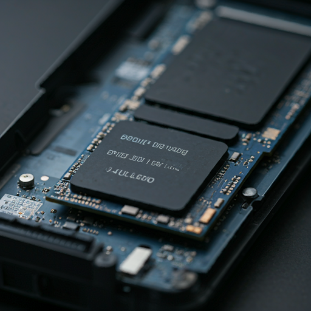

Análisis de la PlayStation 5:
La consola de Sony
destaca por su DualSense y hardware de última generación.

La PlayStation 5, a pesar de su potencia, debe superar desafíos técnicos y de software que garanticen una transición fluida para los jugadores. Por un lado, optimizar los juegos para aprovechar al máximo las capacidades de la nueva consola sin dejar de lado la compatibilidad con PS4 es crucial. Por otro, Sony debe asegurarse de contar con un catálogo de exclusivos lo suficientemente sólido para atraer a los jugadores más exigentes y competir con la creciente biblioteca de Xbox Game Pass.
El diseño de la PS5 es, sin duda, una de las características más llamativas de esta nueva generación. Su forma curvilínea y sus líneas agresivas rompen con los esquemas tradicionales de las consolas de videojuegos. Aunque pueda parecer una elección estética, el diseño de la PS5 tiene una función práctica: su forma permite una mejor disipación del calor, lo que es crucial para garantizar un rendimiento óptimo durante las sesiones de juego más intensas. Además, la disposición de los puertos y botones ha sido cuidadosamente estudiada para facilitar su uso."
El auténtico corazón de esta consola, el circuito integrado que incorpora tanto la CPU como la GPU, la creacion de AMD que parece estar en mejor forma que nunca. A pesar de las personalizaciones, la colaboración entre Sony y AMD ha sido fundamental para el desarrollo de la APU de PlayStation 5. Ambas compañías han trabajado en estrecha colaboración para adaptar la arquitectura Zen 2 y RDNA 2 a las necesidades específicas de la consola. Esta alianza estratégica ha permitido a Sony aprovechar los avances tecnológicos más recientes de AMD, al tiempo que introduce innovaciones propias para diferenciar su producto.
El proceso fotolitográfico utilizado en su fabricación recurre a la tecnología de integración de 7 nm EUV (fotolitografía ultravioleta extrema), y, como veremos más adelante, de su refrigeración se responsabilizan un enorme disipador de cobre y un ventilador de tipo turbina de 120 x 45 mm.

Aunque la arquitectura exacta de la GPU de la PlayStation 5 aún está envuelta en cierto misterio, sabemos que se basa en la potente RDNA 2 de AMD. Sony ha personalizado esta arquitectura para optimizarla para las demandas específicas de los videojuegos, lo que podría traducirse en un mejor rendimiento en tareas como el ray tracing o la generación de efectos visuales complejos. Las 36 unidades de cálculo, capaces de alcanzar una frecuencia de reloj variable de hasta 2,23 GHz, proporcionan una potencia de cálculo de 10,28 TFLOPs, ligeramente inferior a la de la Xbox Series X. Sin embargo, los TFLOPs no son el único factor determinante del rendimiento gráfico, y otros factores como la arquitectura de la memoria y las optimizaciones a nivel de software también juegan un papel crucial.
Sony ha optado por la tecnología GDDR6 para la memoria de la PS5, una elección que garantiza un alto ancho de banda de 448 GB/s y permite a la consola manejar grandes volúmenes de datos de manera eficiente. Esta memoria, unida a un bus de 256 bits, proporciona la capacidad necesaria para alimentar los gráficos de alta resolución, los efectos visuales complejos y las texturas detalladas que caracterizan a los juegos de nueva generación. Además, la GDDR6 es fundamental para garantizar una experiencia de juego fluida, minimizando los tiempos de carga y evitando cuellos de botella en el rendimiento.
Aunque la PS5 cuenta con una controladora personalizada que optimiza el rendimiento del SSD, su capacidad de almacenamiento utilizable de 669,4 GB resulta inferior a la de algunas soluciones de PC y podría limitar la instalación de grandes bibliotecas de juegos. ¿Es suficiente este espacio para satisfacer las demandas de los jugadores más exigentes? ¿Cómo se compara esta capacidad con las futuras expansiones de almacenamiento? Estas son preguntas que los usuarios se plantean a medida que exploran las posibilidades de la nueva consola de Sony.
La inclusión de un lector de Blu-ray 4K en la PlayStation 5 estándar permite disfrutar de una amplia biblioteca de juegos físicos y películas en alta definición. Sin embargo, esta característica tiene un costo adicional. La PS5 Digital Edition, más asequible, sacrifica la compatibilidad con discos físicos a cambio de un diseño más compacto y un enfoque exclusivamente digital.
La decisión de ubicar la unidad óptica en la mitad inferior del panel lateral derecho de la PS5 estándar no es arbitraria. Esta elección responde a una cuidadosa optimización del diseño interno de la consola. Al alojar la placa base en la mitad inferior, los ingenieros de Sony han logrado optimizar la refrigeración y la distribución de peso, factores cruciales para el rendimiento y la durabilidad de la consola. La unidad óptica, al estar situada en un lateral, no interfiere con estos componentes críticos y contribuye a un flujo de aire más eficiente.
.jpg)
.jpg)
.jpg)
En la parte frontal de la PS5, encontramos dos puertos USB: un USB 3.1 Tipo C de alta velocidad y un USB 2.0 estándar. En la parte inferior, casi invisibles, se ubican los botones de encendido y expulsión, diseñados para mantener una estética minimalista. El HDMI 2.1 de la PS5 permite disfrutar de resoluciones y tasas de refresco más altas.Encima de este el puerto Ethernet y dos USB 3.1. Debajo de la rejilla de ventilación, cuenta con una ranura M.2 para instalar un SSD adicional y ampliar su almacenamiento interno. Además, un avanzado sistema de refrigeración, compuesto por un ventilador y un disipador térmico con metal líquido Y por ultimo y no menos importante la base que nos permite poner la consola en vertical como horizontal
Además del ventilador y el metal líquido, un componente esencial en el sistema de refrigeración de la PS5 es el gran disipador de calor de aluminio y cobre. Este disipador, que puedes ver en detalle en el video de Yasuhiro Ootori , es el encargado de conducir el calor generado por los componentes internos hacia el exterior de la consola, asegurando un rendimiento térmico óptimo.
Para evaluar el rendimiento térmico, utilizamos títulos exigentes como 'Spider-Man: Miles Morales' y 'Gears 5'. Medimos las temperaturas máximas en múltiples zonas de cada consola dandonos un promedio de 29.77, en un entorno controlado de 21°C.
El diseño industrial de la PS5, con su chasis de plástico y metal, no solo es estéticamente atractivo, sino que también facilita la disipación del calor. El ingreso de aire fresco por la parte frontal y superior, combinado con la expulsión del aire caliente por la parte trasera, crea un flujo de aire natural que mantiene los componentes a una temperatura adecuada. Es importante destacar que la orientación vertical de la consola optimiza este flujo de aire, mejorando aún más su eficiencia térmica.
A pesar de las altas temperaturas alcanzadas por el aire expulsado, la PS5 no mostró signos de inestabilidad o ralentización durante nuestras pruebas. Esto demuestra la eficacia del sistema de refrigeración y la capacidad de los componentes internos para operar de manera fiable bajo condiciones de alta carga. La temperatura máxima del aire expulsado de 56,7 °C es coherente con el rendimiento térmico esperado para una consola de estas características.
La PS5 representa un gran avance en términos de reducción de ruido en comparación con su predecesora. Durante nuestras pruebas en alta carga, la PS5 registró un nivel de presión sonora de 45,1 dB, lo cual es notablemente más silencioso que los niveles alcanzados por la PS4 Pro. Este logro se ha conseguido gracias a un diseño térmico más eficiente y a un mejor control del flujo de aire.
Aunque la PS5 es capaz de enviar una señal de video 4K a 120 FPS, la realidad es que alcanzar esta tasa de refresco en todos los juegos puede ser un desafío. El hardware de la consola, por potente que sea, tiene sus limitaciones. Por ello, es probable que muchos juegos opten por una resolución 4K a 60 FPS, priorizando la calidad de imagen sobre la tasa de refresco. Sin embargo, la posibilidad de elegir entre diferentes configuraciones ofrece una gran flexibilidad al jugador."
El DualSense irrumpió en la escena de los videojuegos como un huracán, redefiniendo por completo lo que significa jugar. Con una serie de innovaciones revolucionarias, este mando ha llevado la inmersión a un nivel nunca antes visto. Imagina sentir la tensión de una cuerda de arco en tus dedos, o la vibración de un motor rugiente en tus manos. El DualSense ha convertido esta fantasía en realidad, ofreciendo una experiencia de juego tan inmersiva que te hará olvidar que estás sentado en un sofá. Adiós, vibraciones genéricas. Hola, sensaciones precisas.
Astro's Playroom es una carta de amor a las posibilidades del DualSense. Desde sentir la tensión de un arco hasta experimentar la resistencia de diferentes materiales, cada interacción con el mando se ha diseñado para sorprender y deleitar. El juego aprovecha al máximo las características únicas del DualSense, convirtiéndolo en una experiencia imprescindible para cualquier propietario de una PlayStation 5.
La Xbox Series X representa un salto cuántico en la potencia de consola, ofreciendo una experiencia de juego fluida y visualmente impresionante. Su arquitectura personalizada y su enorme capacidad de almacenamiento la posicionan como una verdadera bestia de juego. Microsoft ha puesto un gran énfasis en la retrocompatibilidad, permitiendo a los jugadores disfrutar de una vasta biblioteca de títulos de generaciones anteriores. Además, el servicio Xbox Game Pass ofrece un valor excepcional, brindando acceso a cientos de juegos por una suscripción mensual. Sin embargo, es en el ámbito de los exclusivos donde la consola de Microsoft aún tiene terreno por ganar. A pesar de esto, la Xbox Series X se presenta como una opción sólida para los jugadores que buscan una experiencia de juego potente y versátil.
La PlayStation 5 ha llegado para revolucionar la forma en que experimentamos los videojuegos. Su mando DualSense, con sus gatillos adaptativos y retroalimentación háptica, ofrece una inmersión sin precedentes. Juegos como Astro's Playroom demuestran el potencial de esta tecnología, permitiendo a los jugadores sentir la tensión de una cuerda de arco o la resistencia de diferentes materiales. Si bien la Xbox Series X es una rival formidable, la PlayStation 5 se destaca por su enfoque en la experiencia de usuario y su catálogo de exclusivos. Con una interfaz más intuitiva y un diseño audaz, la consola de Sony promete ofrecer horas de diversión a los jugadores de todas las edades.